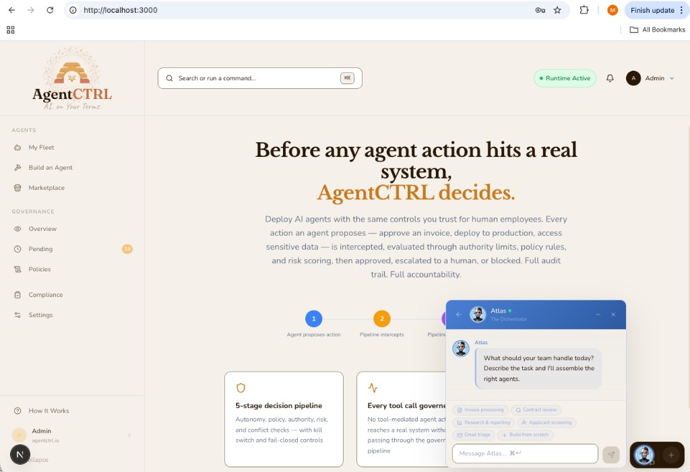
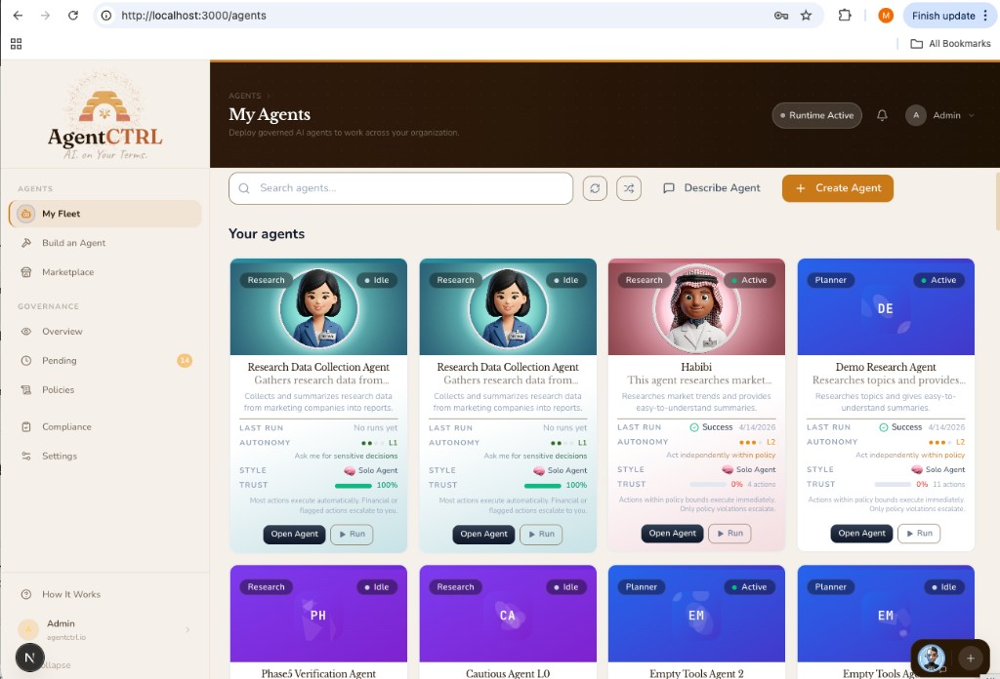
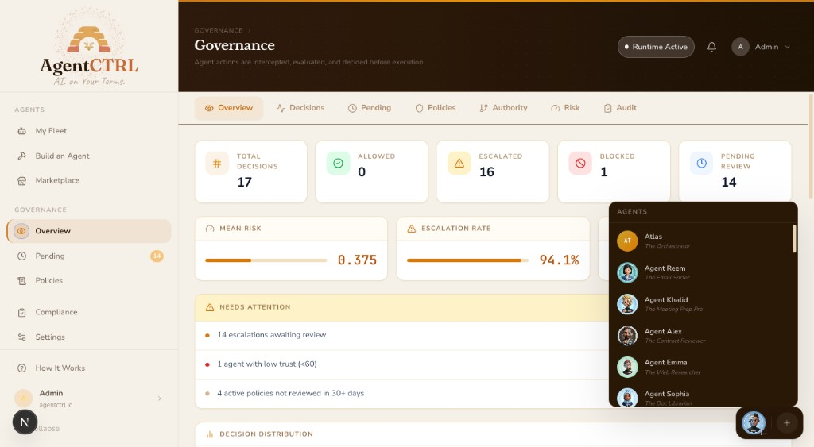
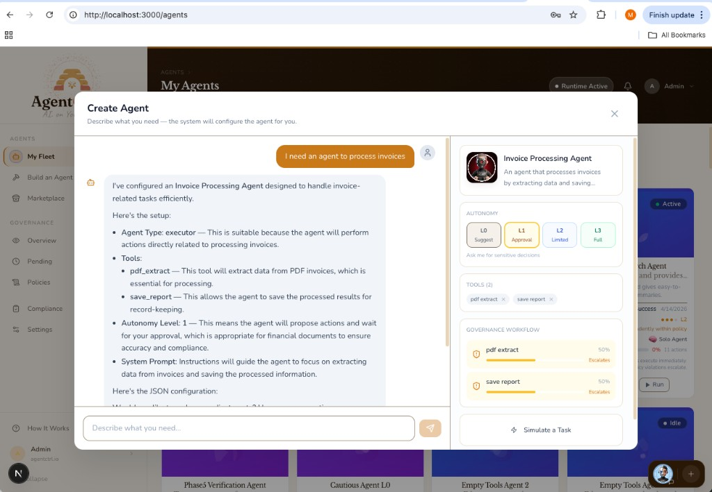
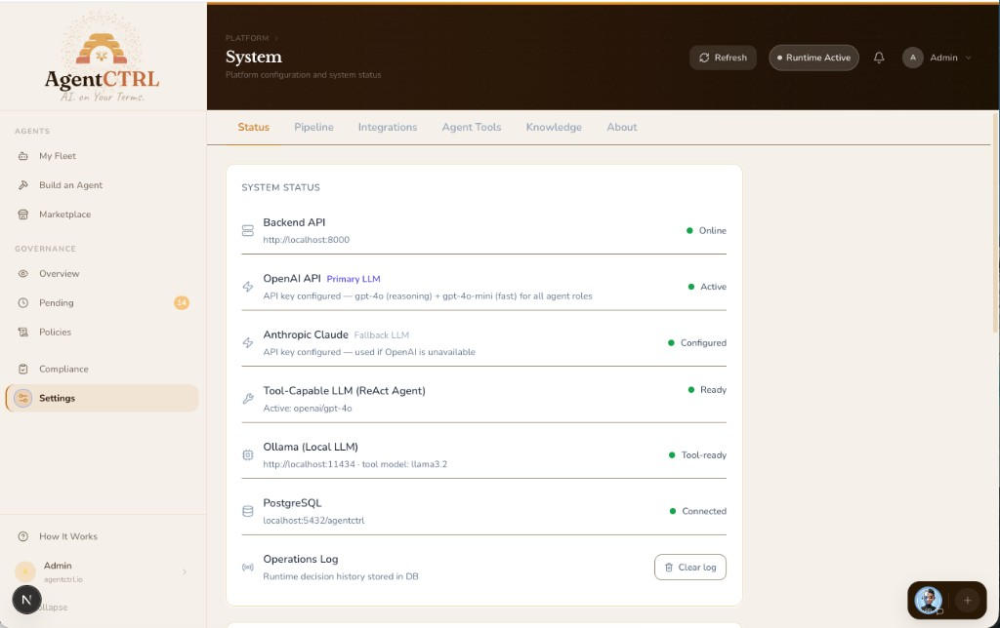
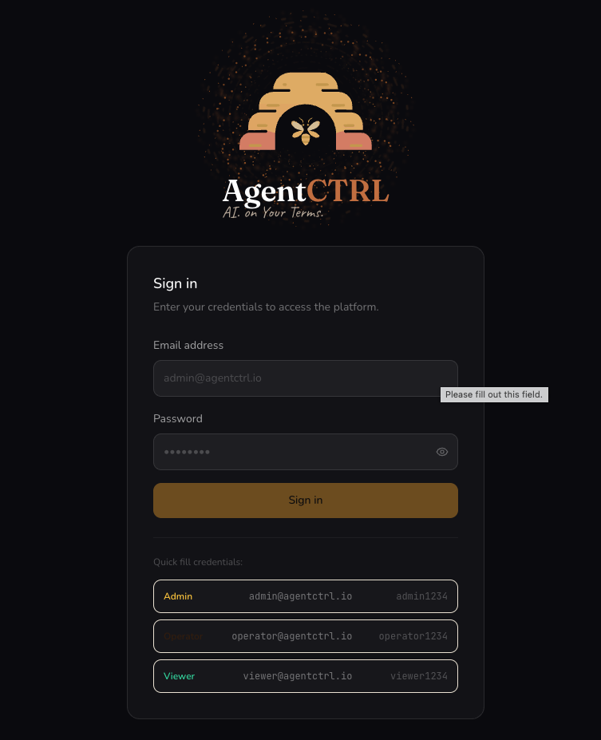

AI. on Your Terms.
Institutional control layer for AI agent actions. Authority graphs, policy evaluation, delegation chains, risk scoring, separation of duty. Before execution.
In a world where AI agents are economic actors, AgentCTRL is the institutional control layer that makes their tool-mediated actions verifiable, bounded, and auditable. Whether you are one person with five agents or an organization with five thousand.
AI agents are becoming economic actors. They approve invoices, deploy infrastructure, commit budgets, and access sensitive data on behalf of real principals. Model providers answer “is this output safe?” (model-level safety). Nobody answers: “Is this agent authorized to commit these resources, and can we prove it?” (institutional control). Those are different problems owned by different stakeholders.
A governed execution layer. Not an agent framework, not an orchestration platform, not a chatbot. A sequential decision pipeline that sits between an agent's decision to act and the actual execution. Every proposed tool call is evaluated through five stages (autonomy, policy, authority, risk, conflict) with cross-cutting controls (kill switch, rate limiting, fail-closed error handling, signed audit). The tool call does not happen unless the pipeline approves it.
One decorator (@governed) or one gateway.validate() call. Works with any framework, any model provider. Zero LLM dependencies in governance.
The barrier to enterprise AI agent deployment is not capability. It is accountability. Organizations cannot deploy agents into production without answering three questions:
Without those answers, legal will not sign off, compliance will not certify, and leadership will not approve production deployment. AgentCTRL provides those answers. The governance surface that turns agent experimentation into production deployment.
Basic guardrails (allow/deny lists, content filtering, simple human-in-the-loop) will be absorbed by frameworks and model providers. What will not:
The core is designed to be separable from the platform. The library runs with zero infrastructure. The platform adds persistence, UI, and operational surfaces.
@governed decorator. CLI. Apache 2.0.The architecture is designed to support an evolution from static rule enforcement to optimizing the allocation of scarce human judgment across unlimited AI capacity. The foundation is already live: a trust-risk feedback loop where agents earn trust through demonstrated reliability and lose it through failures. No policy change required. The flywheel and brake are structural.
How it works today: every pipeline decision updates the agent's trust profile. Proven agents (50+ actions, >90% success) earn up to 15% risk reduction. New agents (<5 actions) receive a risk surcharge. Per-action-type accuracy tracking scales both the surcharge and discount. If a trusted agent starts failing, the discount shrinks and more actions get escalated automatically.
Full-stack governance platform: Next.js 15, FastAPI, PostgreSQL, Redis. Role-based access, real-time escalation queue, signed audit trail.






Every agent action is intercepted, evaluated, and decided before execution. Each stage can short-circuit. Remaining stages run as advisory context.
6 scenarios. Both outbound and inbound governance. Zero config, zero API keys.
The open-source library is the distribution wedge. Behind it sits a full-stack governance platform.